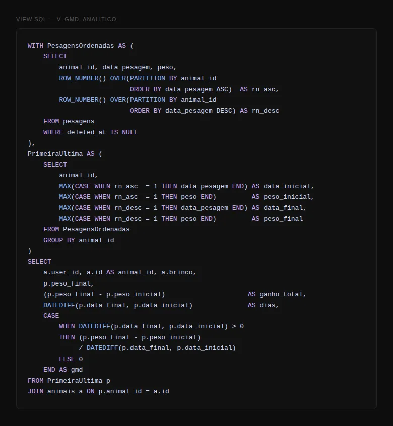
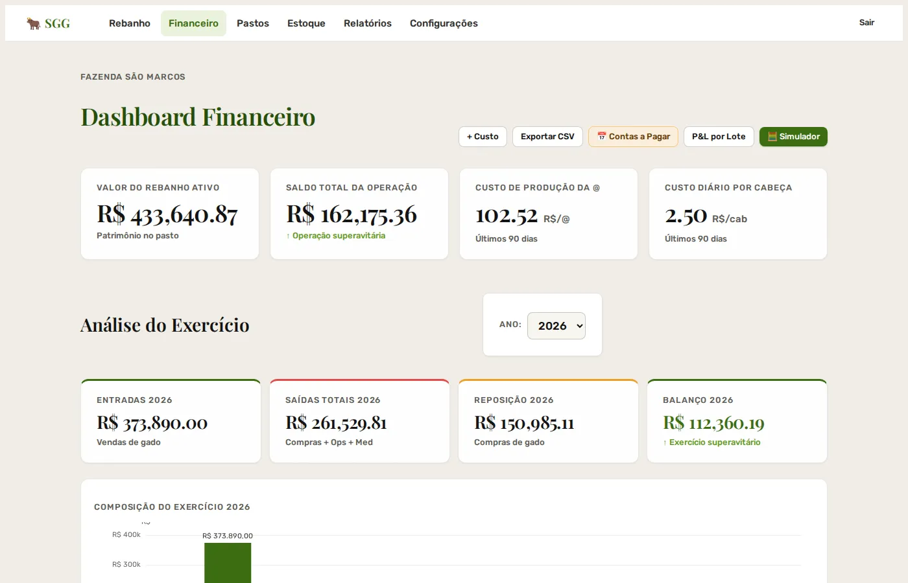

Individual · Em produçãoSolo · In production
Sistema-Gado
Sistema de gestão para a fazenda da minha família: rebanho, fluxo de caixa e cotações num só lugar.A management system for my family's farm: herd, cash flow and market prices in one place.
ProblemaProblem
O controle do rebanho era feito em planilhas, que não calculavam o GMD (ganho médio diário de peso) de cada animal nem cruzavam as pesagens com o fluxo de caixa. Na prática, o produtor não sabia quais animais estavam crescendo abaixo do esperado. Num rebanho em que cada cabeça vale perto de R$ 2.000, um animal que não engorda passa meses consumindo pasto e suplemento sem dar retorno.
Herd records lived in spreadsheets that didn't calculate each animal's ADG (average daily weight gain) or cross-reference weigh-ins with cash flow. In practice, the farmer couldn't tell which animals were growing below target. When each head is worth close to R$ 2,000, an animal that isn't gaining weight spends months eating pasture and supplements with no return.
Decisão principal: cálculos no banco, não no PythonKey decision: compute in the database, not in Python
O GMD é calculado com LAG() sobre o histórico de pesagens: cada pesagem é comparada com a anterior e dividida pelo intervalo de dias. Em vez de trazer tudo para a memória do Flask e iterar animal por animal, uma view (v_gmd_analitico) usa CTE e window function e devolve o resultado pronto. O mesmo vale para o fluxo de caixa (v_fluxo_caixa, um UNION de compras, vendas, custos e medicações) e para as outras views do sistema.
ADG is computed with LAG() over the weigh-in history: each weigh-in is compared with the previous one and divided by the number of days between them. Instead of loading everything into Flask and looping animal by animal, a view (v_gmd_analitico) uses a CTE and a window function and returns the finished result. The same goes for cash flow (v_fluxo_caixa, a UNION of purchases, sales, costs and medications) and the system's other views.
Por isso descartei o ORM. Ele trocaria uma query legível de 40 linhas por várias chamadas de método gerando SQL equivalente, só que mais difícil de ler e de otimizar com índices. O schema é versionado com yoyo-migrations, em SQL puro e com uma política de só adicionar.
That's why I dropped the ORM. It would have replaced a readable 40-line query with several method calls generating equivalent SQL that's harder to read and to tune with indexes. The schema is versioned with yoyo-migrations, in plain SQL, with an additive-only policy.

StackStack
- Flask: leve, sem ORM, porque o SQL puro era o requisito central
- MySQL 8: window functions para o GMD
- Redis: cache
- Playwright: geração de PDF no servidor
- Flask-Limiter: limite de requisições no login e na exportação
- Railway: container e MySQL gerenciado no mesmo provedor
- Flask: lightweight, no ORM, since plain SQL was the core requirement
- MySQL 8: window functions for ADG
- Redis: caching
- Playwright: server-side PDF generation
- Flask-Limiter: rate limiting on login and export
- Railway: container and managed MySQL from one provider
ResultadoOutcome
O sistema está em produção. Números da base de demonstração:
The system is in production. Figures from the demo dataset:
| Animais no rebanhoHead of cattle | 235 |
|---|---|
| GMD médioAverage ADG | 0,730 kg/diaday |
| Animais abaixo do GMD mínimoAnimals below minimum ADG | 17 (< 0,395 kg/diaday) |
| Valor do rebanho ativoActive herd value | R$ 433.640,87 |
| Praças de cotação monitoradasPrice markets tracked | 33 |
O painel lista direto os brincos dos 17 animais abaixo do GMD mínimo, algo que a planilha não mostrava.
The dashboard lists the ear tags of the 17 animals below minimum ADG, something the spreadsheet never showed.


O que eu faria diferenteWhat I'd do differently
TODO Próximos passos e lições.
TODO Next steps and lessons.